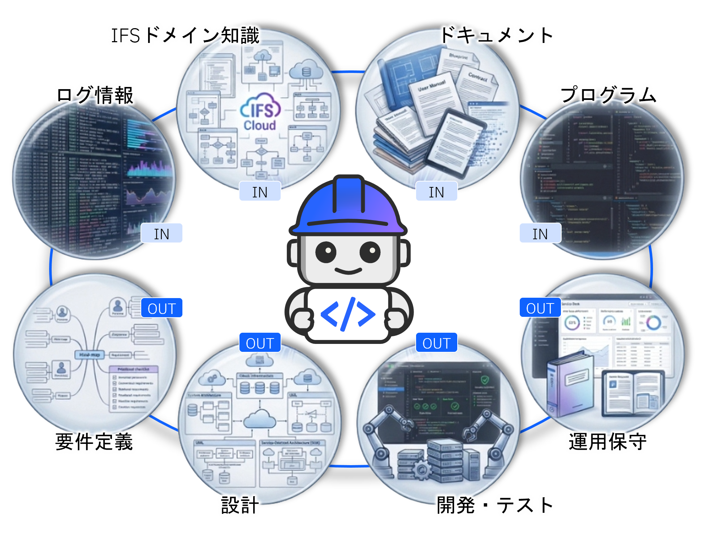

AI エージェントが、IFS Cloud 導入のすべてのフェーズを支援する
要件定義・設計・開発・テスト・移行・運用保守まで、プロジェクト全体を一気通貫でカバー。IFS Cloud に特化したナレッジとAI駆動開発アセットを組み合わせ、高品質・省コスト・短納期を実現します。
AI エージェント「IBM Bob」があなたのプロジェクトを支援
IBM Bob は IFS Cloud 専門の AI 開発支援パートナーです。プロジェクトの各フェーズで以下の役割を担います。
- 業務設計 業務要件をヒアリングし、Fit to Standard を目指した新業務の構築に寄り添います。
- システム設計 IFS Cloud の専門家としてデータモデル・API・プロジェクション設計を支援します。
- 仕様書駆動開発 仕様書から自動開発を行い、リスクを分析して改善策を提案します。
- 作業記録・マニュアル あなたの作業を記録し、業務マニュアルを自動で作成します。

IBM 独自の AI 基盤がもたらす強み
IFS ドメイン特化型アセット（ノウハウ・ナレッジ・AI駆動開発）と、プロセス 1,200+・画面構造 12,000+・データモデル 8,000+ の豊富なナレッジベースを活用。AI Agent（IBM Bob）が IFS Cloud の専門家としてプロジェクト現場で活躍します。
仕様駆動開発のための共通アセット「ALSEA（AI Lifecycle Shared Engineering Artifacts）」により、エンタープライズ向けの開発メソッドと包括的な AI for IT ソリューションで仕様駆動開発への変革をリードします。
仕様書がそのままコードになる世界へ
従来のシステム開発では「要件定義 → 設計 → 開発 → テスト」の各フェーズで大量の人手と時間を要してきました。仕様駆動開発（Spec-Driven Development）とは、AI が仕様書・コード・テスト・ドキュメントをすべて自動生成し、人間はレビューと意思決定に集中するアプローチです。IBM の ALSEA はこの変革を支える共通アセット基盤です。
- ① AI が業務要件を分析し仕様書を自動生成
- ② 人間が仕様をレビューし承認する
- ③ AI がコード・テスト・ドキュメントを自動生成
- ④ 人間がレビューして本番へ
- 単独ツールの導入だけでは効果は限定的
- プロセス全体の再設計が必要
- 人・プロセス・ツールを一体で変革する
- お客様と IBM が一丸となって取り組む
AI 前提のプロジェクト体制づくりが成功の鍵
AI による全体効率化を実現するには、ツール導入だけでなくプロジェクト体制そのものの変革が必要です。具体的には、仕様書の書き方・レビュープロセス・AI との協働ルールを事前に整備することが求められます。IBM はこの体制づくりをお客様と一丸となってサポートします。まずは「AI 前提のプロジェクト準備」から一緒に始めましょう。
本サイトは IFS Cloud の活用シナリオをご紹介するソリューションサンプル集です。各ページでは実際の画面イメージ・操作フロー・期待効果をご確認いただけます。
導入検討・提案資料作成にご活用ください。詳細なデモや個別相談については、担当の IBM 営業までお問い合わせください。